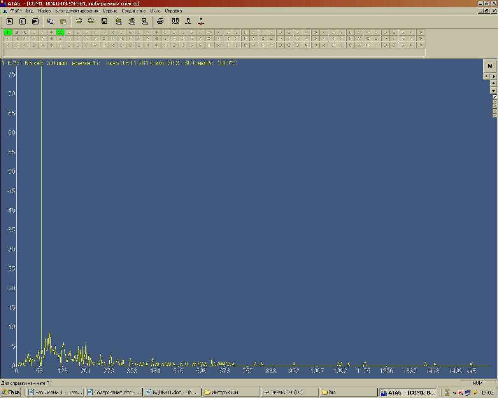
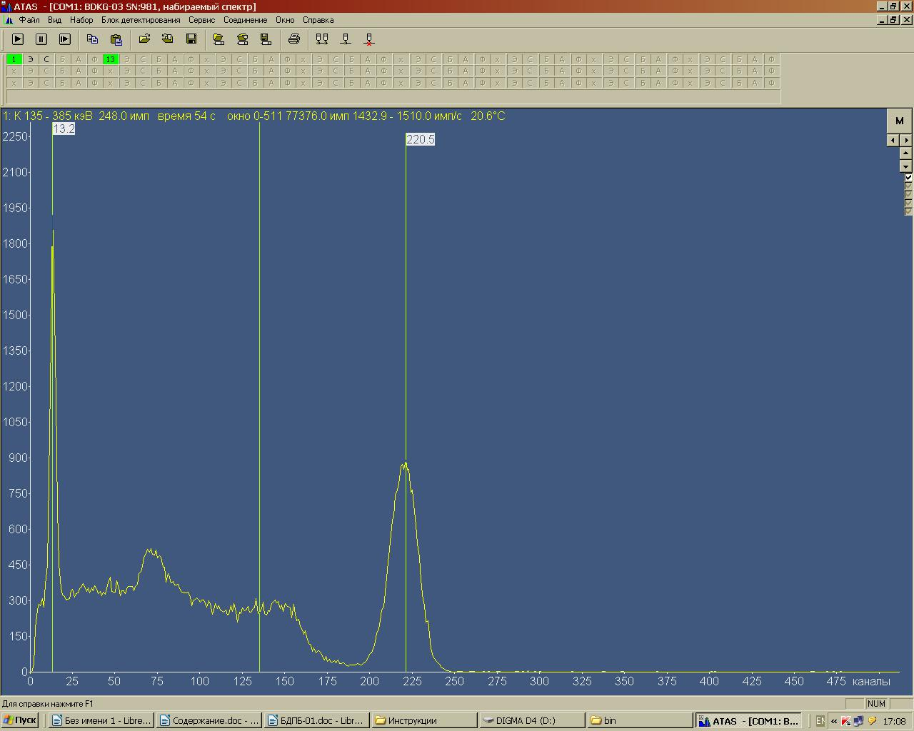
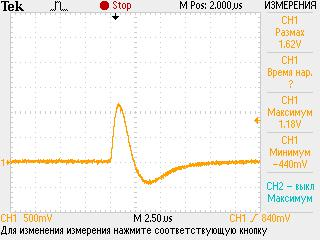
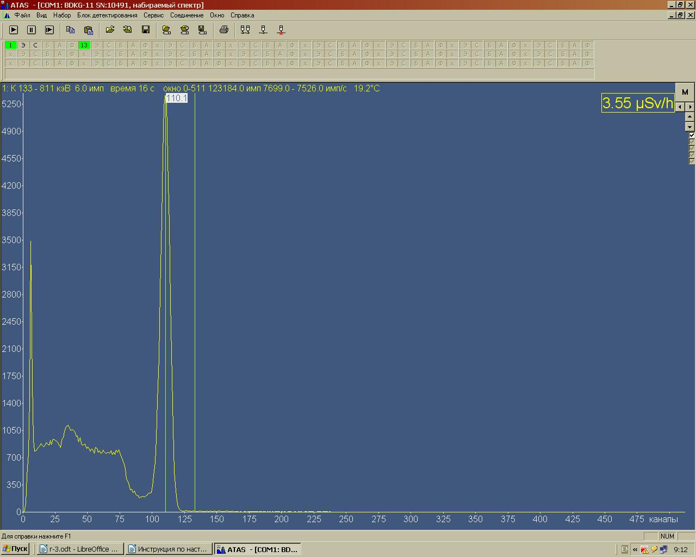

1.1. Подключите БД к ПЭВМ с помощью кабеля БД через модуль адаптера USB-БД, одновременно контролируя
высокое напряжение в контрольной точке 13 платы ПН, значение которого должно быть в пределах 500-1000 В.
При увеличении напряжения свыше 1200 В незамедлительно отключите БД от ПЭВМ.
1.2. Запустите программу ATAS tech? Нажмите режим «инициализировать соединение». Программа должна
обнаружить БД и вывести на экран спектр, считываемый с БД (рис 1).

Рисунок 1
1.3. Запишите значения энергии и сигмы: в меню «сервис/калибровки/энергия и сигма/из папки» выберите
папку со значениями и запишите в БД.
1.4. Установите в меню «Блок детектирования \ усиление» исходный код усиления:
БДКГ-03
80
БДКГ-05
90
БДКГ-11
90
Поднести к БД источник гамма-излучения ОСГИ 137Cs и проконтролируйте спектр в соответствии с
рис 2.

Рисунок 2
1.5. При помощи подборочного резистора R13 и потенциометра R11 платы ПН установите второй пик спектра в
220±2 канал.
1.6. Проконтролируйте реперный сигнал на выходе операционного усилителя D4:6 платы усилителя 512 в
соответствии с рис 3, амплитуда которого должна быть в пределах 1,1-1,3 В

Рисунок 3
1.7. Проконтролируйте напряжение на выходе D4:6 платы ПН, величина которого должна быть 0,7-4 В
1.8. Измерьте с помощью вольтметра С509 высокое напряжение в точке 13 платы ПН, величина которого должна
быть (500-800) В.
1.9. Для датчиков БДКГ-05 и БДКГ-11 необходимо настроить 2 ой диапазон (до 3 МЭВ). Для этого подключите
БД
к ATAS Tech и в меню «блок детектирования / диапазон» выберите 40-3000 кэВ. И поднесите к БД источник
ОСГИ 137Cs, выставите второй пик спектра в 110 канал при помощи резисторов R9, R7 на плате ПН
(Рисунок 4).

Рисунок 4
2. Приработка БД
2.1. Соберите БД в экран в соответствии со сборочным чертежом.
2.2. Подключите БД к БОИ, и приработайте не менее 24 часов.
2.3. Проконтролируйте спектр в соответствии с п. 1.5
3. Расчёт параметров стабилизации
3.1. Поместить БД в камеру тепла и холода, подключите БД к ПЭВМ, запустите программу ATAS Tech.
3.2. Выдержите 1,5 часа при температуре 20 ºС.
3.3. Проконтролируйте спектр в соответствии с п. 1.5, при необходимости кодом усиления установите канал
в (220±1)
3.4. Проведите калибровку температурной стабилизации в соответствии с инструкцией
3.5. Рассчитать температурные коэффициенты при помощи программы «TZ-exel.xls»,
вкладка «Расчет термокалибровок»
3.6. Снимите стабилизационную зависимость при температуре 20 ºС изменяя код усиления в соответствии с
с инструкцией. Рассчитайте стабилизационные коэффициенты
в программе «TZ-exel.xls»,
вкладка «Стаб Зависимость»
3.7. Установите в меню «Блок детектирования / усиление» исходный код усиления 80.
3.8. Откройте в программе ATAS Tech окно «Блок детектирования / Параметры стабилизации». Запишите термо
коэффициенты в поле «Усил.(ЛЕД)/Температура» и стабилизационные коэффициенты в поле «Стабилизационные».
Установите исходные коэффициенты в поле «Стабильность БД, %». Эти коэффициенты соответствуют поправочным
коэффициентам в БД:(Рисунок 7) :
«Поправка мощности дозы» - 100 (U1 - Чувствительность);
«Линейность мощности дозы» - 0 (U2, U3 – коррекция смещения пика от загрузки, поправка для
коэффициента коррекции по просчётам);
«DT1(для мёртвого времени)» - 100 (для БДКГ-05(11) = 0) (U4 – Коррекция добавки к мёртвому
времени,
не зависящей от энергии);
«DT2(для мёртвого времени)» - 45 (для БДКГ-05(11) = 85) (U5 - Коррекция добавки к мёртвому
времени,
зависящей от энергии);